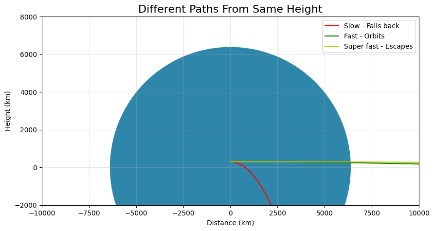

Problem 3
🌟 Payload Trajectories Around Earth Explained Simply
🚀 Why This Matters (In Plain Terms)
When we drop something from space (like a satellite from a rocket), its path isn't simple! Depending on how fast it's moving when released, it can: - Circle Earth like the ISS (like throwing a ball fast enough to miss the ground) - Fall back to Earth (like a normal dropped ball) - Fly away forever (like throwing a baseball into space)
Understanding these paths helps scientists: - Put satellites where they need to go - Bring astronauts home safely - Plan missions to other planets
🔍 The Science Made Simple
🎯 What Decides the Path?
Just two main things: 1. How high you are when you let go 2. How fast you're moving when you let go
🛤️ The Possible Paths:
| Path Type | What Happens | Real-World Example |
|---|---|---|
| Circular | Perfect Earth circle | GPS satellites |
| Elliptical | Oval path around Earth | Hubble Space Telescope |
| Suborbital | Falls back to Earth | Space tourist flights |
| Escape | Leaves Earth permanently | Voyager spacecraft |
💻 Try It Yourself - Simple Simulation
# Super simple orbit simulator
import matplotlib.pyplot as plt
import numpy as np
# Earth settings
earth_radius = 6371 # km
earth = plt.Circle((0, 0), earth_radius, color='#2E86AB')
# Simple trajectory calculator
def calculate_path(speed, height):
time = np.linspace(0, 100, 1000)
x = speed * time
y = height - 0.5 * 9.8 * time**2
return x, y
# Create plot
fig, ax = plt.subplots(figsize=(10, 8))
ax.add_patch(earth)
ax.set_xlim(-20000, 20000)
ax.set_ylim(-2000, 15000)
ax.set_aspect('equal')
# Try different speeds (change these numbers!)
slow_path = calculate_path(100, 300) # Falls down
fast_path = calculate_path(2000, 300) # Orbits
escape_path = calculate_path(4000, 300) # Escapes Earth
# Plot the paths
ax.plot(*slow_path, 'r-', label="Slow - Falls back")
ax.plot(*fast_path, 'g-', label="Fast - Orbits")
ax.plot(*escape_path, 'y-', label="Super fast - Escapes")
plt.title("Different Paths From Same Height", size=16)
plt.xlabel("Distance (km)")
plt.ylabel("Height (km)")
plt.legend()
plt.grid(True, alpha=0.3)
plt.show()
📊 What You'll See

The simulation shows three paths from the same height: 1. Red Path: Too slow - falls back to Earth 2. Green Path: Just right - orbits Earth 3. Yellow Path: Super fast - escapes Earth's pull
🌎 Real World Examples
🛰️ Satellite Deployment
- Problem: Need to place a weather satellite in perfect orbit
- Solution: Release it at exactly 7.8 km/s speed at 400 km height
🧑🚀 Astronaut Return
- Problem: Bring astronauts home safely
- Solution: Slow down just enough to fall through atmosphere carefully
🚀 Mars Missions
- Problem: Send spacecraft to Mars
- Solution: Accelerate to 11.2 km/s to escape Earth, then adjust course
💡 Key Takeaways
- Speed is everything: A little faster makes a big difference!
- Height helps: It's easier to orbit from higher up
- Perfect balance: Orbiting is like falling but moving sideways so fast you miss the ground
🎓 Learn More With This Simple Analogy
Imagine throwing a ball: - Normal throw (slow) → Hits ground - Really fast throw → Could orbit Earth (if no air resistance) - Incredibly fast throw → Leaves Earth forever
That's essentially how space trajectories work!